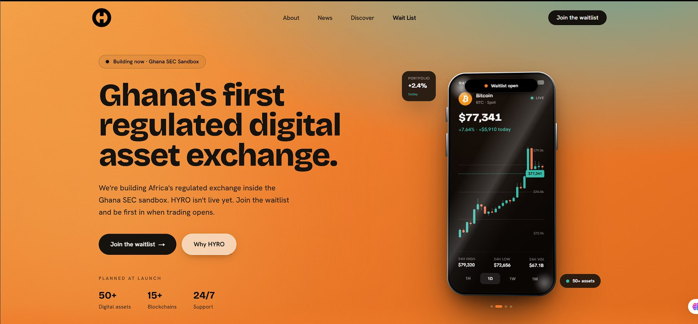

Getting a regulated crypto exchange to launch when the critical path runs through other people
HYRO is building Ghana's regulated digital-asset exchange inside the Ghana SEC sandbox. I joined in April 2026 as project manager, also covering product management, to turn everything the launch depends on, from identity checks to payments, vendors and regulators, into a plan the team can build against.
- Role
- Project manager, also covering product
- Team
- Founders, a 5-person delivery team, external vendor Flexx
- Stage
- Pre-launch, 100+ on the waitlist
- Timeline
- Apr 2026 to present
- Product
- hyro.to ↗

01The problem
Who it's for
- Ghanaians who want to buy, hold and sell crypto in cedis
- People wary of unregulated or offshore platforms
- Users stuck with clumsy, risky ways of moving between cedis and crypto
What's broken today
- No trusted, regulated local venue for crypto
- Moving money between cedis and crypto is risky and fragmented
- Compliant onboarding is hard to do well, and it gates everything else
The core insight. A user can't do anything until they're verified. Compliant onboarding, not trading, is the real product problem.
02Context
In March 2026 HYRO became one of 11 firms admitted to Ghana's SEC regulatory sandbox under the Virtual Asset Service Providers Act, 2025. That sets clear expectations for identity, AML and data protection before anyone can trade.
Launch depends on two groups of work, and most of it sits with third parties:
Identity and compliance
- KYC and identity verification with Ghana's National Identification Authority (NIA)
- Data protection registration
- SEC sandbox requirements
Money movement
- Payments
- Fiat on and off-ramp
- Settlement
- Wallets
Reviewing the external vendor's MVP proposal showed where scope and quality fell short of what a regulated product needs, especially around deployment, responsibilities and third-party providers. I broke the requirements into a 60+ item backlog across 10 workstreams: KYC and identity, backend, authentication, payments, on and off-ramp, settlement, wallets, frontend, vendor integrations, and data protection and regulatory.
03Decisions and trade-offs
Verify against the national ID source
DecisionWe compared a turnkey KYC vendor (Sumsub) with a direct integration with NIA, and chose NIA's remote facial verification.
Trade-offMore authoritative, but far more coordination and paperwork than a plug-in vendor.
Sequence by dependency, not feature list
DecisionRequirements first, then frontend and vendor work, then backend integrations, then compliance, then launch. Real KYC couldn't be built until NIA issued API access and a merchant code.
Trade-offSome visible features wait, but the team never builds on something that isn't ready.
Frontend on simulated data
DecisionThe user journey was built and demonstrated with simulated data while integrations matured.
Trade-offSome rework when real data arrives, in exchange for a team that never sits idle waiting on vendors.
Production on AWS, not Vercel
DecisionThe vendor proposed Vercel. I moved production deployment to AWS so environment issues are settled before handoff for testing.
Trade-offMore setup up front for fewer surprises in testing.
A clear line between HYRO and the vendor
DecisionHYRO owns KYC, AML rules, payments, on and off-ramp, settlement, authentication, backend and integrations. Flexx owns the exchange engine, swaps and trading, and parts of the frontend.
Trade-offMore handoffs to manage, but clear accountability on both sides.
04Execution
The onboarding flow we're building toward
- A new user signs up
- They take a live selfie
- The selfie is checked against national identity records
- HYRO receives the result
- Verified users continue, and failed checks stop access
Growing the waitlist before launch
In June 2026 we ran a World Cup 2026 prediction challenge with a GHS 20,000 prize to grow the waitlist and our social following. Entrants joined the waitlist, followed HYRO's channels and predicted the last 8, the last 4 and the winner. I wrote the qualification rules, including a tie-break where the earliest valid entry wins, built the entry form, had the team test required fields and duplicate entries, and cleared all test data before it went public. It launched the same day the brief came in. Instead of building a campaign system, I chose a form plus a short script to pick the winner once results were in.
What I did
- Set up MVP scope, objectives, phased roadmap, governance and the 60+ item backlog
- Ran the NIA process: prepared the application and organisation profile, chose the service and put the API into the next sprint
- Took a stalled Data Protection registration from application to a provisional certificate
- Wrote the compliance module requirements: KYC tiers, customer risk assessment, AML monitoring, alerts, escalation, STR reporting and audit trails
- Led technical reviews of the vendor's proposals and kept responsibilities clear
- Ran the World Cup prediction challenge from rules to launch
- Drafted the technical team expansion plan and coordinated hiring for cyber security, blockchain and full-stack roles
- Built an AI workflow that turns meeting summaries into Jira tasks, Confluence pages and Slack reminders
What the team did
- Developers built the KYC flow, integrations and frontend
- Founders own the vision, fundraising and regulatory relationships
- Flexx builds the exchange engine and trading
05Outcomes
- Ghana SEC sandbox certificate
- Data Protection provisional certificate
- NIA onboarded and API handed to the team
- KYC backend integration deployed
- Company website live, frontend journey demonstrated with simulated data
- Full end-to-end KYC in testing
- Live transactions and settlement pending
- Regulatory go-live pending
Where it stands: HYRO is pre-launch with a waitlist. Next, the backend verification connects to the vendor's UI, and the full KYC flow is tested end to end before live transactions.
06What I learned
- In regulated fintech, the critical path runs through compliance and third parties, not the codebase.
- Plan around what's ready, not a feature wish list. Build what you can while you unblock what you can't.
- A stalled dependency needs an owner. The Data Protection registration moved once someone took it end to end.